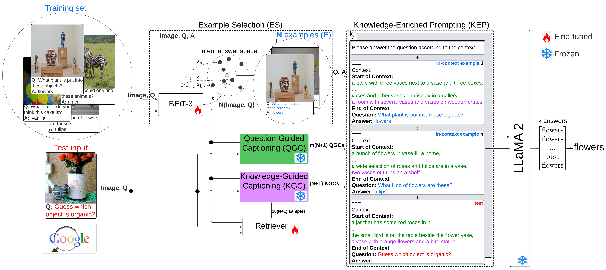

Knowledge-based visual question answering (VQA) requires models to leverage external knowledge beyond the given image to answer the stated question. While large language models (LLMs) can implicitly encode such knowledge, their purely text-based pre-training makes their reasoning ability less suited for visually grounded tasks, and most LLM-based VQA methods still fail to explicitly retrieve relevant information. In this paper, we propose Knowledge-Integrated Reasoning for VQA (KIR-VQA), a novel framework that augments prompt-guided caption generation with external knowledge retrieval and integrates these knowledge-guided captions into the LLM's prompt. Moreover, we fine-tune a vision-language transformer, BEiT3, for VQA and leverage its latent answer space for in-context example selection. Our KIR-VQA ensures that the LLM receives explicit information grounded in both the question and the image, rather than relying solely on its implicit knowledge for the VQA task. Extensive experiments on the OK-VQA and A-OKVQA datasets demonstrate the effectiveness of our proposed KIR-VQA framework, surpassing both open-source and proprietary LLM-based approaches.

BibTex Code Here